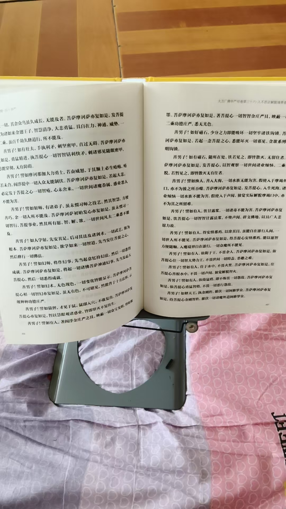

20260825今天法事三场，把给我烧元宝的老两口累趴了
符咒术法
快了快了，还有不到四十页
引人入胜
看完就整理记录
翻看了一下，竟然跟书上截然不同
全是实修细节
可能就是说的链接高维
读经，读着读着，就跟人聊天去了，也不知道是谁
没问名字
解答比经里更细节
[呲牙][呲牙][呲牙]，今天法事三场，把给我烧元宝的老两口累趴了
不过，摆的很用心，懂行
是我小楼的邻居，开个佛店，有元宝机，没生意，
我以前让另一个批发商烧，那个做的更大
这老两口会做人，送酒送油，请吃饭
就把这业务让他们做了
一个月给我烧元宝物件，也烧小两万的
这样，节省了我的时间
我就在家里供供灯，供水果，
邻村大神，
也不算大神，会摆供，没什么能力
他的孙子，跟外孙女都落榜了
临近师父都能借光[强]
气病了
这就是能力问题，高中考大学
都没考上，这样，以后求学，百姓就不会让她祈福了
自己的孩子都考不上，
没实力，让人笑话
我保的一个，抽烟打牌，几次被学校开除，就在实验中学
竟然考了五百一十多分
他爸妈都说神了